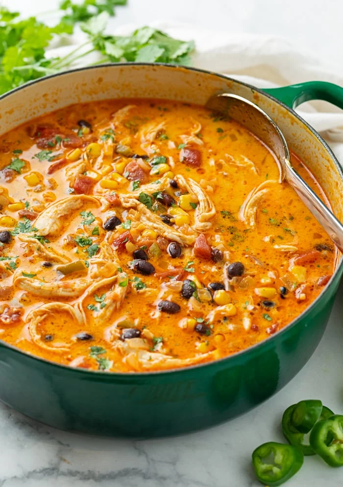

Chicken Enchilada Soup

Same Declious Chicken Enchilada, but Now in Soup Form!
Ingredients
- Chicken
- Chicken Broth
- Enchilada Sauce
- Olive Oil
- Garlic
- Corn
- Black Beans
- Cream Cheese
- Cumin
- Cayenne Pepper
Steps
- Heat the oil.
- Fry oninons.
- Stir in minced garlic.
- Add in cumin.
- Add remaining ingredients
- Chicken
- Chicken Broth
- Enchilada Sauce
- Corn
- Black Beans
- Cayenne Pepper
- Let simmer with lid on for 20 minutes.
- Remove and shred chicken breast.
- Whisk cream cheese into our soup.
- Add shredded chicken back into the soup.
- Cook soup for another 5 minutes.